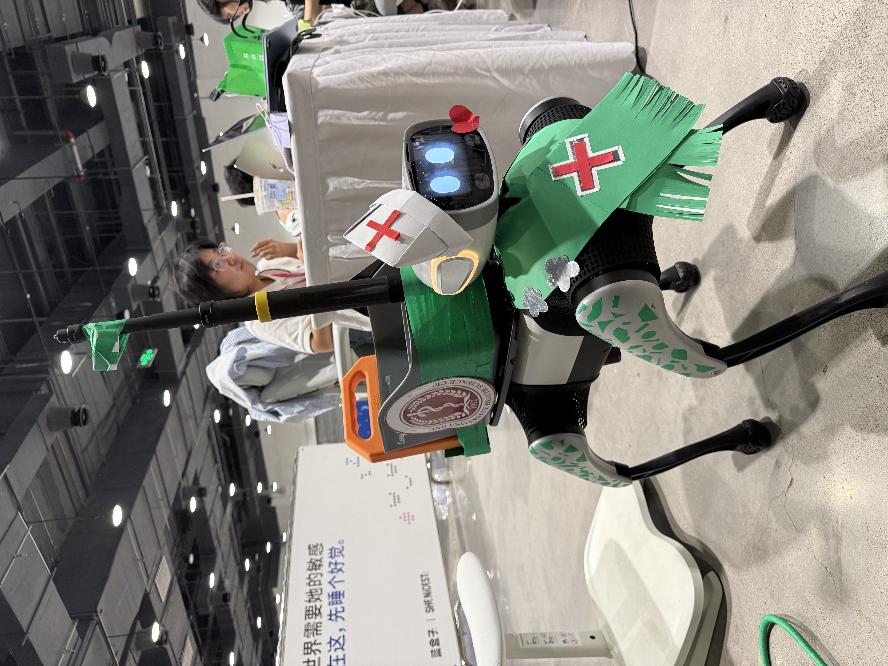
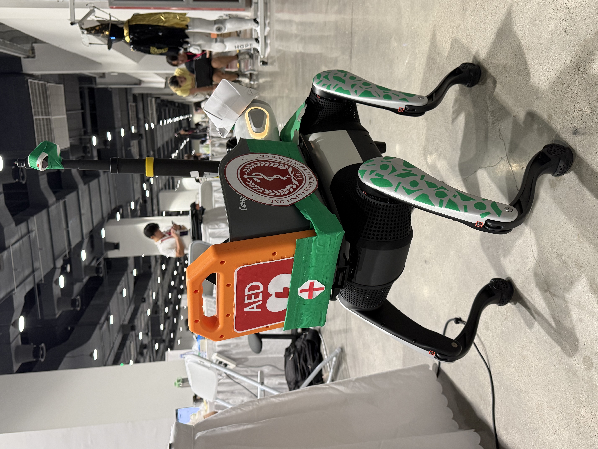
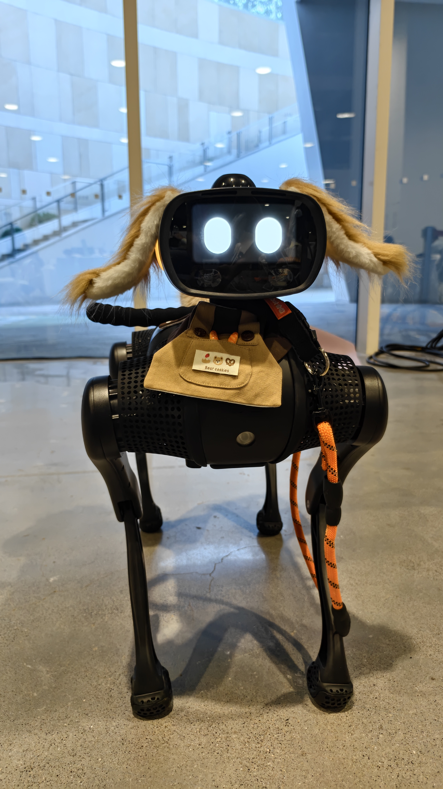
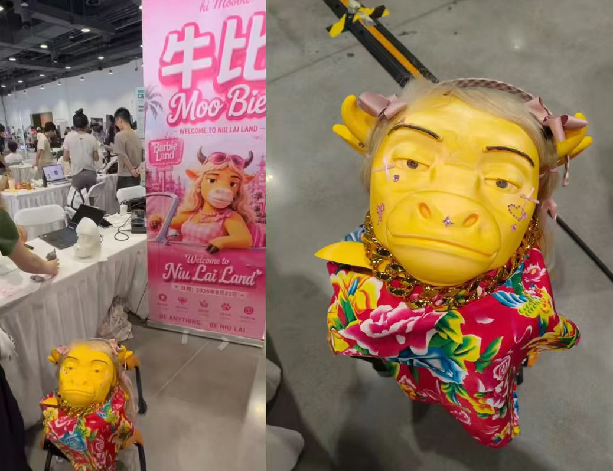
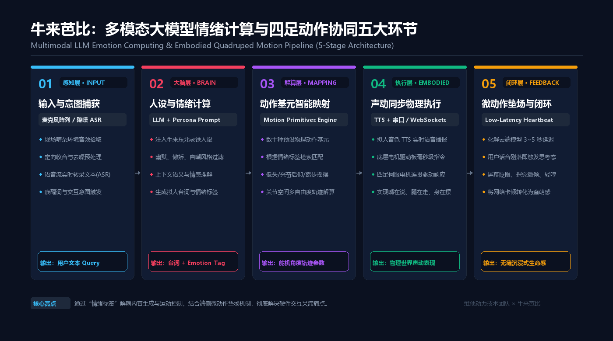
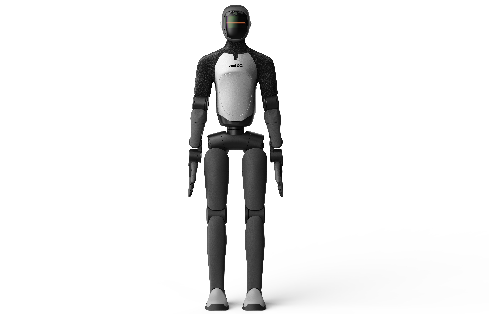

黑客松标杆案例复盘：6 大真实项目
🎙️ 展开直播口播导语（讲师版）
“最好的学习方式不是看枯燥的 API 手册，而是看同行在真实高压场景下做出了什么！2026 年 8 月 26 日至 30 日，北京国家会议中心二期，SheNicest 千人黑客松。维他动力第一次把开发版机器狗交给一群素未谋面的陌生开发者：3 台 EDU 开发版 + 5 台普通版，没有命题作文，只有赛前培训里反复说的一句话——‘先让它动起来，再谈创意。’”
“96 小时之后，6 个项目诞生：医院陪诊的聆灵、让人愿意从沙发上爬起来的伽伽狗、穿东北大花袄的牛来芭比、用 VLM + MCP 做健康感知的 PoopSense、服务视障女性的她的视界，还有闯进废墟找人的小安。今天这一讲，我们把每个项目拆成：痛点 → 架构 → 难点 → 可复用配方。”
本课学习目标
- 复述赛事规模与 6 个项目的赛道、硬件改造与软件亮点
- 拆解聆灵的需求洞察、48 小时分工、五大功能链路与防跟丢状态机
- 解释伽伽狗的“搭子定位”与功能冲突的优先级取舍
- 说明牛来芭比的 3D 打印分体结构与情绪计算五环节
- 用评分器给自己的选题打分，并列出可执行的收敛动作
赛事全景：96 小时，6 个项目
2026 年 8 月 26 日至 30 日，SheNicest 2026 烈变黑客松在北京·国家会议中心二期举行。维他动力提供 3 台 Vbot EDU 开发版 + 5 台普通版，报名约 1000 人、到场约 500 人；没有命题作文，只有赛前培训反复强调的一句话：“先让它动起来，再谈创意。”
设备：3 台 Vbot EDU 开发版 + 5 台普通版。
产出：6 个完整二开项目；找零零队“聆灵”获维他动力创造奖。
开箱 SOP：逐台 SSH 连入 → 逐台
/vel_cmd 点动测试 → 确认“听得懂话”才交付选手。
六个项目，一张矩阵看清差异
深案例 01 · 聆灵：陪诊不只是“带路”
找零零队由 5 位赛前互不相识的选手在群里“拼车”组队：队长佳一，核心二开萝卜·韩宛吟，硬件改装美诗，涂装与视觉 Eason、不凡。团队把前 48 小时花在一个越推越像“伪需求”的方案上，最后 48 小时推倒重来，做出医院陪诊机器狗，并拿到维他动力创造奖。
它的一句话定位是：“她解决的不只是‘科室在哪里’，而是：当一个人走进医院，谁来陪她完成整个就医流程？”
1. 需求洞察：母亲的一句话，推翻 48 小时的伪需求
第二天下午，萝卜转述了妈妈去大医院看病的真实痛点：医院像迷宫，挂号在 A 区、抽血在 B 区、CT 在负一层；固定导诊屏“看完转两个弯就忘”。全队判断原方案“自己都说服不了”，决定哪怕只剩 48 小时也推翻重来。决定后的第一分钟，队长就去向组委会申请 EDU 真机——“不接真机调试，所有设计都只是纸上谈兵。”
2. 48 小时分工：三线并行
软件（萝卜 + 不凡：信令、建图、导航规划）、硬件（美诗：支架、AED 承托、摄像头走线）、交互与涂装（佳一 + Eason：视觉识别、交互逻辑、护士帽 / 披风 / 腿部花纹）三线同时推进。
3. 五大功能链路：把陪诊收敛成技术闭环
团队先把患者行为拆成两类：确定性刚性任务（挂号、就诊、化验、取药）与突发性弹性需求（上洗手间、走累想坐下、突发急救），据此收敛成五个功能：
- ① 线上预约与远程迎宾：到达前对齐挂号信息，大厅指定点位迎宾并确认身份。
- ② 全流程路径规划导航：按就医 SOP 把科室串成最优路线，主动领路。
- ③ 动态任务中插：主路径中随时插播“去洗手间 / 打印化验单”，完成后无缝回归主线。
- ④ 紧急医疗响应（AED 联动）：背负真实 AED，一键切入紧急向导 / 报警。
- ⑤ 任务完成自动归位：陪诊结束引导离院，自主回桩充电待命。
4. 防跟丢状态机：“主人，你在哪？”
在真实医院里，跟丢不是异常，而是必然。技术必须适应人，而不是强求虚弱的患者追赶机器。
0.4 · 稳定步态
0.2 · 降速回望
0.0 · 原地等待，转向并语音“主人，你在哪？”
恢复带路巡航
5. 背上的两套系统：AED 急救箱 + 智能药篮

软件只能告诉你“AED 在 200 米外的柱子后面”；而在黄金 4 分钟里，背着 AED 走在走廊里的机器狗本身就是移动急救单元。
药篮按五色分区：🟢 肾上腺素自动注射器（急性严重过敏）、🟡 口服葡萄糖片（低血糖昏厥）、🔴 阿司匹林咀嚼片（心绞痛 / 心梗）、⚪ 沙丁胺醇吸入剂（哮喘急性发作）、🔵 纳洛酮鼻喷雾（阿片类急性中毒）。
视觉哨兵 basket-sentry 的判定规则极简而鲁棒：高位延伸杆上的俯视广角摄像头 + 本地轻量目标检测，“整幅画面即篮子，离屏 1 秒即视为拿出”。终端播报“刚拿：口服葡萄糖片，累计拿取 4 次”，自动完成用药审计。端侧 128 TOPS 负责视觉、图像不出设备；云端大模型负责流程推理与全局规划。
深案例 02 · 伽伽狗：不是教练，是搭子
汪汪队只有两个人：艾奕芊（港大法律与媒体方向博士退学转 AI）与王晨宇（港中文数学系 PhD，本科飞行器设计）。两人此前都没做过具身智能项目，用三天在大头 EDU 版上做出瑜伽搭子，给机器狗戴上毛绒耳朵与尾巴。

1. 为什么是“搭子”，不是“教练”
真小狗有陪伴感，但没法提醒、也没法模仿你；机器狗刚好把“陪伴感 + 功能性”连起来。团队判断，痛点不是“不知道怎么练”，而是“人知道，但不想开始”——它先解决的是“让你愿意起来”。手机提醒会被顺手划掉，闹钟会被按掉；但一个会走到你身边的实体，你伸手摸它一下，就脱离“继续躺着”的惯性。
2. 功能冲突：A 单独好，B 单独好，A+B 全是 bug
视觉识别、运动控制、语音唤醒、大模型对话、物理安全并发——这是一个多模块并发的活体系统。真实踩坑是：云端大模型接入对话后，本地控制指令与大模型触发机制产生死锁，机器狗直接不动。三天里团队砍掉大量想法，优先保证核心动作识别、基本避障、专属名字。
3. 技术拆解：17 点骨骼 + 视觉补盲
- 姿态判定：YOLO-Pose 提取肩 / 胯 / 头 / 四肢关键点，按相对距离与角度判断下犬式 / 类俯卧撑；官方输出为 Logit，须做 Sigmoid 还原为 [0,1] 概率。
- 动作模仿：动作库片段不一定刚好合适，团队截取并重新编排，让肢体语言“像在模仿你”；现场小朋友多，划定活动范围，近人立即避让减速。
- 雷达看不见平铺的瑜伽垫：交给视觉，从俯视角度做边缘检测与透视变换（OpenCV，由 Agent 起草基础版再按实机调参）。
- 低视角盲区：人趴在垫子上会从视野里“消失”；解法是后退、低头、前倾，融合不同距离的识别结果，不因某一帧没看清就判定人不见。

补盲动作带来意外收获：工程约束反而变成了拟人化交互。唤醒词也被改成“伽伽”——“给宠物起名字，它和你的关系就变了。”底层唤醒代码无权限修改，团队绕开写死链路，在外部接管音频流，用 Sherpa 本地提取“伽伽”的语音特征并匹配后触发；局限是更认主人的声音，换人偶尔不灵敏。
深案例 03 · 牛来芭比：让牛来走出荧幕
抢地牛来队共 5 人（队长兼硬件结构辛瑞莉，另有负责大模型 / 提示词、全栈集成、产品与视觉 UI 的成员），96 小时封闭开发。定位是：“芭比的内核是 You can be anything——那‘牛来’为什么不能是一只四足机器狗？”团队做“一魂多身”矩阵：四足狗负责漫游、跟随、迎宾与肢体互动，桌宠与声音盲盒机分担轻量交互；现场最先被看见的，是那层 3D 打印的“皮囊”。

1. 3D 打印：从“装不下”到“前脸 + 后脑”
牛头必须完整包裹原装头部模块与屏幕，同时留出散热、传感器视场与颈部自由度。切片软件直接报警——成型仓尺寸不够；整头一体打印耗时超 24 小时，且一旦翘边断料全盘报废。
解法是在 CAD 中拆成“前脸面具 + 后脑头盔”：接缝处设计定位凸台与卡扣槽，物理卡扣 + 热熔胶合体。代价是前脸约 10 小时、后脑约 8 小时，两天两夜每半小时盯一次首层附着力。
2. 情绪计算：五环节闭环

闭环可以概括为：多模态输入 → 情绪与语义理解 → 拟人化动作生成 → 物理执行。落到 EDU 上，就是下面五个环节：
3. 化解 3~5 秒大模型延迟：“微动作垫场”
现场 Wi-Fi 拥堵时，语音 → 文本 + 动作指令往返需 3~5 秒；机器狗僵住 5 秒，人会立刻觉得“坏了”。垫场机制是：检测到语音结束，不等云端返回，立刻触发随机“倾听状态”——头部微扬、重心轻后倾、屏幕眼睛快速眨动、一声“嗯？”——云端回来后再接傲娇方言 + 点头踏步，卡顿变成“蠢萌反射弧”。等待还要设上限：示意实现最多等 8 秒，超时播放“摊手道歉”并放弃本次执行，绝不无限卡死。
4. IP 具身化三层模型
这套改造也沉淀出 IP 具身化三层模型：L1 皮囊（外壳 / 卡扣公差 / 面料 / 质心）、L2 灵魂（人设 / 语料 / 情绪基准）、L3 具身（动作基语 / 屏幕联动 / 防死锁调度）。三层都指向同一条：先让物理约束成立，再谈人设。
其余三案例速览
她的视界
软硬兼施队 · 队长张玄昱 · 无障碍辅助

- 机器狗：移动探索与环境感知
- 人形机器人：交互、操作与任务执行
- 全局摄像头：“第三只眼”，共享视觉与空间理解
四大场景：动作同步挑战 → 引导训练 → 协作寻找物品 → 日常出行陪伴；开发者日志称它最接近“为什么我们要做机器狗”的答案。
可复用：多体分工，不让一只狗包办移动、操作与全局感知PoopSense
PoopSense 队 · 队长庞雅心 · 智能家居 / 健康
“最私密的信号，交给最不打扰的执行者。”
- 感知：自研模块采集形态 / 颜色 / 气味，形成身体状态信号
- 理解：AI Agent 对照个人长期基线，识别值得关注的变化，再转成高层行为指令
- 执行：大头机械狗主动靠近 + 语音 + 动作（如“近期偏干 → 提醒补水”）
机器狗是智能家居的“人体状态感知入口”之执行端，而不是什么都自己做。
可复用：感知 → Agent → 执行分层；健康隐私优先端侧 / 本地处理小安 Life Rescue
应急救援 · Vbot + Insta360 X4 + RDK + 多模态 AI
“指挥界面亮出救援优先级的那一刻，评委席安静了。”
- 高风险区域进不去 → Vbot 机器狗进入废墟
- 普通摄像头有盲区 → Insta360 X4 回传 360° 画面
- 视频零散难判断 → 多模态 AI 理解现场 + 指挥界面输出优先级
- 音视频处理与设备控制 → RDK 算力板
界面给出受困者位置与外貌特征、意识 / 活动能力 / 受压情况、环境风险、救援优先级与下一步任务。边界很克制：只分析视频与音频中可观察到的生命迹象，不替代专业医疗检测。
可复用：把“先救谁”做成可解释的优先级界面；外挂相机 + RDK 守住 5 kg 与 CPU 预留 2 核
可复用工程经验：把案例缩成 EDU 动作清单
| 经验 | 出处 | 落到 EDU 上的做法 |
|---|---|---|
| 先拿真机，再做设计 | 聆灵 | 决定方向后的第一分钟申请 EDU 真机；“不接真机调试，所有设计都只是纸上谈兵” |
| 先做闭环，再做复杂 | 6 队共性 | 先跑通“语音识别 → 走两步 → 屏幕表情”最小闭环，再叠加大模型与视觉 |
| 功能冲突先排优先级 | 伽伽狗 | 安全停机 > 用户打断 > 动作响应 > 闲时游荡；直接速度控制与 RCP 二选一 |
| 用工程约束做设计 | 伽伽狗 / 牛来 | 视觉盲区变成“低头看你”；3~5 秒网络延迟变成“蠢萌反射弧” |
| 算力隔离防摔机 | 聆灵 | 大模型 / 视觉高负载时用 taskset -c 2-7 限定 AI 进程，给 locomotion_exec 保留 0–1 核，杜绝看门狗超时 |
| 统一固件 + 开箱自检 | 现场幕后 | 赛前逐台 SSH + /vel_cmd 点动；确认“听得懂话”再交付，别把 OTA 留到开场 |
| 负载与安全兜底 | 聆灵 / 小安 | 外设总重 ≤ 5 kg、质心居中；上台路演指派一名组员手持急停待命 |
192.168.127.10:8787）问题随新固件解决。Day 1 还出现“绑定风暴”：大量机器开机无法站立、无二维码、无法连 App，后台改绑 SN 码逐台解决。比赛 / 工作坊前务必统一固件版本，开箱后先自检再分发。🧪 小实验：黑客松选题可行性评分器
把你想做的题目填进来，改动任一选项都会即时重算。评分不是评审预测，而是把 6 个案例的踩坑经验变成一张“先砍哪里”的行动清单。
你的选题能在这届黑客松活下来吗？
默认值是一道中等难度的题：4 人、48 小时、不改硬件、用大模型、不做多机。
- 正在计算…
评分与风险为基于 6 个案例经验的启发式估算，仅用于选题收敛，不代表评审结果。
本课小结
“六个项目，六种温度：陪诊、陪练、陪笑、陪伴、陪行、陪救。技术路线惊人一致——大模型理解、视觉感知、机器狗执行。下一个故事，等你来写！”
- 6 个项目覆盖医疗、运动、IP、健康、无障碍、救援；5 支队伍选择了“语音大模型 + 双目视觉”
- 聆灵赢在需求洞察与工程收敛：真机先行、三线并行、防跟丢状态机、AED + 药篮的物理价值
- 伽伽狗与牛来证明：功能冲突要用优先级解决，工程约束可以反过来做人设与交互
- 上台前统一固件、开箱自检、守住 5 kg 负载，并指定专人手持急停